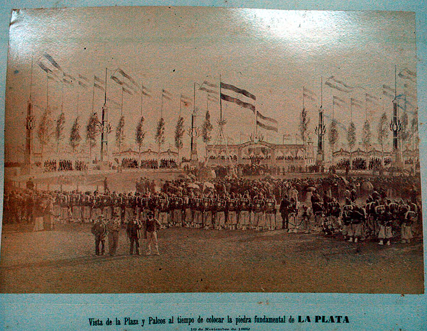

|
|  |
|
Album de vistas fotográficas de La Plata, 1884
|
In Argentina, the city of La Plata, construction of which began in 1882 after the federalisation of Buenos Aires as national capital, was designed as a monumental embodiment of the new administration´s creed of 'peace and administration': a model city comprehensively built in one and the same architectonic style (classicism) and comprising various environments where residents could simultaneously distract and instruct themselves – a park, a zoo, a botanical garden, and a museum.
|